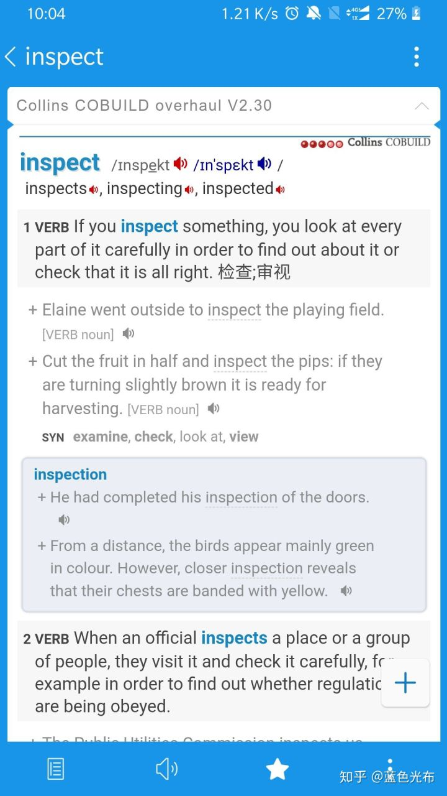
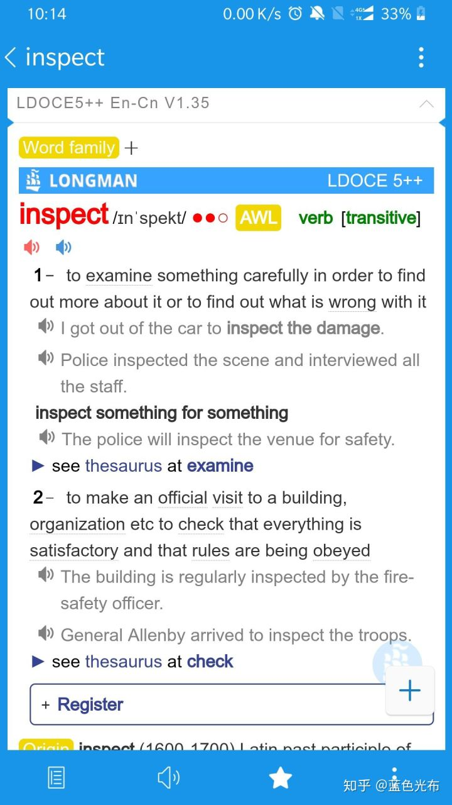

一.柯林斯词典
如果之前没有使用过英英词典的话，建议先从柯林斯词典（Collins COBUILD overhaul V2.30）开始。柯林斯在解释动词和形容词时多会使用条件句+主句的方式提供一个具体的情景。柯林斯基本全部都用简单单词+一个完整的句子来提供英英解释，对于新手来说有两大优点， ①可以暂时摆脱例句的记忆负担 ②2500个简单单词描述一个单词，易于理解。不像母语者词典，对于新手来说难度直接上升了好几个量级(当然一定程度上也损失了一点在初期可忽略的词汇精确度) 暴力一点就是，『if you 你要查的词， you balabala. 』 初期要习惯英英解释，并快速搭上全英解释的高速路，柯林斯为不二之选。
例子：
二.朗文词典
朗文是一款杂糅性质的词典，它包含了英美的用法、英式的例句发音和英美单词发音。
朗文提供的解释是针对单词本身的 ，并不像柯林斯那样，“如果你xx了，那么你就干嘛干嘛了。”
它会提供一个短语来描述该单词，你读完短语后一般不会第一时间就明白这个单词是什么意思，所以进一步的，你需要借助例句来感受英英解释。
这也是朗文的最大的亮点之一，朗文提供的例句都有真人原声发音（英音），而且也不是生搬硬套的没有感情的发音，例句均为真实场景下真实的英式表达。
相对于其他词典引用自带系统模拟发音来说，强大且良心不少。
相对于柯林斯来说，朗文大而全，先介绍一下 有一些简单词汇的THESAURUS（同义词辨析）部分
有啥用？
先不急，你先考虑以下的场景。
当你感觉到冷的时候，作为一个英语非母语的人，你首先会想到的表达，可能是cold这个词。
但有时候的冷，并不是一个cold就可以解决的。
你可以是感觉到凉爽，或者生病时的虚寒体冷，以及站在东北且衣服不够的那种，极寒之冷。
你可以说，在前面堆几个very就可以了啊。有点冷就very cold, 非常冷就very very cold...
但我们查一下cold这个词，我们会发现，我们想表达的几个含义，词典都已经给我们做好了辨析。
事实上，我们正可以通过这部分来避免用词上的无力和不精准。
你可以通过这部分学习到：
看到了吗? 下次如果你想和别人表达你很冷，而且远超过了你认为cold可以表达的范畴，你可以说I feel freezing。
注：每个词都有每个词的特定用途，这部分仅仅是为了给大家一种甄别正确用词的方式。
真要说朗文哪里有不满意的地方的话
总结：上述两本词典均为ESL词典。什么叫ESL词典？全拼为English as a Second Language 即为给英语非母语者的用户的词典。 所以我们不应该惧怕这类ESL词典的英英解释，别人做出ESL词典就是为了照顾我们这些学英语的人，而不是面向母语专家。 ESL词典中英英解释中的词均为常见2500词排列组合而成，英英解释几乎不会出现超难词或者十分影响你理解的词。 阅读英英解释的最好理由就是防止中文解释带来的信息失真，虽然ESL词典并不能做到完全消除失真，但是可以很大程度上减免。 唯一需要的就是耐心，你需要慢慢地阅读，你会发现英英解释难度甚至比你高中做过的卷子都低多了。
例子：
三.搭配词典
搭配词典没什么好讲的，本身只用作搭配用。
当写作时，不知道什么词才和你想要的这个词对应。比如表达增长具有increase，increment，rise，grow up，soar等词，但它们基本绑定了它们的语境，一般情况下不可随意替换使用，那么就需要查阅搭配词典来确定它的主语或者宾语，副词必须是哪些。